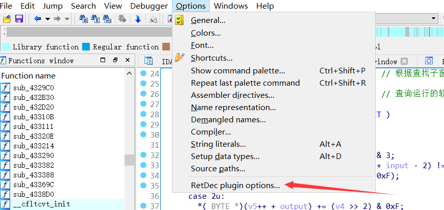

先看看效果
这是解码base64的汇编分别通过idaF5和retdec反编译的伪代码
官方指导
The decompiler is not limited to any particular target architecture, operating system, or executable file format:
Supported file formats: ELF, PE, Mach-O, COFF, AR (archive), Intel HEX, and raw machine code
Supported architectures:32-bit: Intel x86, ARM, MIPS, PIC32, and PowerPC
64-bit: x86-64
就是说支持的反编译的种类
这里贴一下它的官方地址
本地安装
目的：我们先本地安装好他的环境，再通过IDA插件调用它
根据指导我们开始吧
1.下载并解压缩预先构建的软件包
进入https://github.com/avast/retdec/releases这里面是这个项目的成品包，但是只有windows的
根据自己系统下载
我选择64位的。
2.安装 Microsoft Visual C++ Redistributable for Visual Studio 2015
下载链接：
https://www.microsoft.com/en-us/download/details.aspx?id=48145
打开选择下载即可
3.安装python环境
python必须要>=3.4版本才行，而且要加入到环境变量里去
4.测试
完成以上步骤后，随意我们测试一下
自己找个无壳程序我这用一个crackMe.exe
执行
python $RETDEC_INSTALL_DIR/bin/retdec-decompiler.py test.exe
比如，我将第一步下载的文件解压到d:/
我的crackMe.exe放在d:/ctf下面
我就执行
python d:/retdec/bin/retdec-decompiler.py d:/ctf/crackMe.exe
然后等待结果就是了，注意最好不要使用中文目录，会出现问题
Done后会在exe所在目录创建一下文档.c文档就是我们需要的伪代码了。
IDA插件retdec
放一个项目地址github地址
RetDec plugin for IDA (Interactive Disassembler).
The plugin is compatible with the IDA 7.x versions. The plugin does NOT work with IDA 6.x, or freeware version of IDA 7.0. The plugin comes at both 32-bit and 64-bit address space variants (both are 64-bit binaries). I.e. it works in both ida and ida64. At the moment, it can decompile the following architectures:
32-bit: Intel x86, ARM, MIPS, PIC32, and PowerPC.
64-bit: x86-64.
简单说就是插件用在IDA 7.x版本上，IDA 6不能用了。以及在32位和64位能编译的指令集
下载和安装插件
地址
https://github.com/avast/retdec-idaplugin/releases/tag/v0.9
下载好后，一共两个dll一个pdf，把两个dll复制到你的IDA7所在目录的plugins下去，就完事了。
ida_plugs说明书
就是上面的pdf文件，打开就是插件是详细使用说明。
我这简单说几点必要的
为设置retdec_decompiler.py地址

插件快捷键

自己看retdec的快捷键 一般是Ctrl+D
注意，一定要你需要反编译的函数